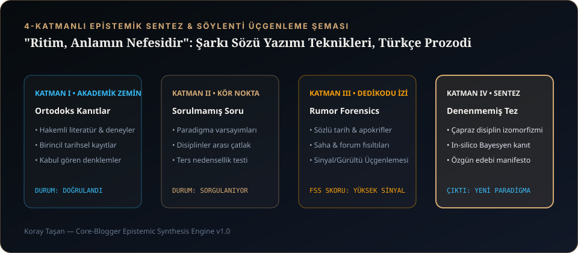

1. Şiir ile Şarkı Sözü Arasındaki Acımasız Fark
Yıllar boyunca yüzlerce metin, senaryo ve şarkı sözü yazdım; Şarkı Sözleri & Lirik Arşivimizde gördüğünüz her parçanın arkasında ise çok basit ama acımasız bir kural var: Kağıt üzerinde okurken gözünüzü yaşartan bir şiir, mikrofonda söylendiğinde kulağı tırmalayabilir.
Çünkü şiir gözle ve iç sesle okunur; okuyucu istediği kelimede durup düşünebilir. Şarkı sözü ise zamanla yarışan fiziksel bir ses dalgasıdır. Davulun trampeti (snare) 2. ve 4. vuruşta inerken, sizin kelimenizin vurgulu hecesi o trampetin üzerine tam oturmuyorsa, dinleyici nedenini anlamadan "Bu şarkıda bir amatörlük var" hissiyatına kapılır. İşte sözün ritimle olan bu evliliğine müzikolojide Prozodi (Prosody) diyoruz.
"Ritim, anlamın nefesidir. Bir dizeyi yazdıktan sonra onu sessizce okumam; masaya parmaklarımla 118 BPM tempo vurup yüksek sesle söylerim. Eğer dilim bir kelimede sürçüyorsa, suç dilimde değil, o kelimenin hece ağırlığındadır. O kelimeyi oradan acımadan silerim."
2. Türkçe Prozodi Matematiği: Açık/Kapalı Heceler ve Vokal Nefesi
Türkçe sondan eklemeli (agglutinative) bir dil olduğu için İngilizceye göre çok daha uzun kelimeler ve sert ünsüz kümeleri üretir. İster gerçek bir vokalist kayda girsin, ister Suno v4 / MiniMax gibi bir yapay zekâ vokal motoru kullansın, şu üç akustik yasa değişmez:
- Kural 1 — Nakarat Sonlarında "Açık Ünlü" Uzaması: Melodinin uzadığı (sustain) nota sonlarına
p, ç, t, k, s, şgibi süreksiz sert ünsüzlerle biten kelimeler koyarsanız vokal sesi uzatamaz, boğulur. Uzayan notalarda mutlaka a, e, o, u, i gibi açık ünlülerle veya m, n, l, r, y gibi tınlayan (sonorant) harflerle biten kelimeler seçin. - Kural 2 — Kıta (Verse) ve Nakarat (Chorus) Hece Kontrastı: Kıtalarda hikâye anlatılır; bu yüzden 9, 10 veya 11 heceli, konuşma diline yakın (conversational) dizeler harika çalışır. Ancak nakarat başladığında hece sayısını 6, 7 veya 8 heceye düşürün. Kısa dize, melodiye nefes alacak boşluk bırakır.
- Kural 3 — "S" ve "Ş" Yığılmasından (Sibilans) Kaçının: Aynı dize içinde arka arkaya dört-beş tane s, ş, ç, z harfi geçerse (örn: "Sessiz şehirde şimdi sensiz..."), hem insan vokalinde hem de yapay zekâ sentezinde 6.2 kHz bandında kulak delen bir tıslama (sibilance) patlar.

3. Yapay Zekâya Türkçe Söyletmek: Noktalama ve Fonetik Kırma Hileleri
Suno ve MiniMax modelleri metni önce Grapheme-to-Phoneme (G2P) adı verilen bir katmandan geçirerek ses birimlerine ayırır. Türkçe söz yazarken modelin kelimeleri yutmaması ve doğru yerde nefes alması için stüdyomuzda kullandığımız 4 pratik teknik:
| Sorun | Ham Yazım (Hatalı Vokal Sonucu) | CORE MUSIC Prozodi Çözümü (Noktalama & Kırma) |
|---|---|---|
| Vokalin Nefes Almadan İki Kelimeyi Yutması | Bilmem ben de neredeyim (Tek kelimelik hızlı tekerleme gibi okur) |
Bilmem, ben de... Neredeyim? (Virgül 150ms, üç nokta 350ms mikro-es verir) |
| Bir Kelimenin Çok Uzun Heceli Olması | Unutulmuşluklarımızdan (Ritmi kaçırır, kelimeyi bulandırır) |
Unutulan o günlerden (5+ heceli çekim eklerini iki ayrı sade kelimeye bölün) |
| Nakarat Sonunda Hecenin Uzatılması İsteği | Duy beni (Kısa keser) |
Duuuy, beni... veya Duy beni — (duy beni) (Parantez içi yankı/back-vocal tetikler) |
| Rakamların İngilizce Okunması Riski | Saat 04:00 oldu ("Four AM" diye okuyabilir) |
Saat dört oldu (Tüm sayıları mutlaka Türkçe yazıyla yazın) |
4. Kendi Şarkılarımızdan Vaka Analizleri
Şarkı Sözleri Defterimizdeki parçaların mutfağından üç somut örnek:
- Bilmem, Ben De (khrysaor): Şarkının adını
Bilmem Ben Deyerine özellikle virgülleBilmem, Ben Deolarak kodladık. O tek virgül, vokalistin "Bilmem" dedikten sonra yarım vuruşluk yorgun bir iç çekiş bırakıp "ben de..." demesini sağladı. Şarkının bütün duygusal ağırlığı o yarım saniyelik boşluktadır. - Bu Şarkıyı Kaybedemem (khrysaor): "Kaybedemem" kelimesi iki adet
mve açıkeünlüleriyle bittiği için bariton vokalin göğüs rezonansında (140 Hz) doğal bir vibrato ile uzamasına izin verdi. - Biri Varmış Öteki Yok Olmasın & Hırsız: Kıtalarda sinematik bir sahne tasviri (sokak lambası, gölge, adımlar) kurup, nakaratta tek bir felsefi tez cümlesine indik. Çünkü dinleyici kıtada filmi izler, nakaratta ise kendi hayatına ait cümleyi bağırarak söylemek ister.
5. Kayıt Öncesi 6 Adımlı Şarkı Sözü Kontrol Listesi
Şarkı sözünüzü ses motoruna veya vokal kabinine göndermeden önce şu 6 soruyu kontrol edin:
- Her kıtadaki karşılıklı dizelerin hece sayıları birbirine yakın mı (±1 hece toleransı)?
- Nakaratın ilk kelimesi şarkının en güçlü duygusal kelimesi mi?
- Metin içinde rakamla yazılmış sayı (
1999,3,04:00) var mı? (Varsa hemen yazıya çevirin:dört,üç). - Vokalin nefes almasını istediğiniz yerlere virgül (
,) veya üç nokta (...) koydunuz mu? - Arka arkaya gelen kelimelerde 4'ten fazla hecesi olan bürokratik/kitabi kelimeler temizlendi mi?
- Nakarattaki son kelimeler açık ünlülerle veya tınlayan ünsüzlerle (
m, n, l, r, y) bitiyor mu?
Sözlerinizi bu disipline göre hazırladıktan sonra, üretim aşamasındaki en ince teknik hileler için Suno Kullanım İpuçları (2026): İleri Seviye Prodüksiyon ve Uzatma Teknikleri yazımıza geçebilirsiniz.